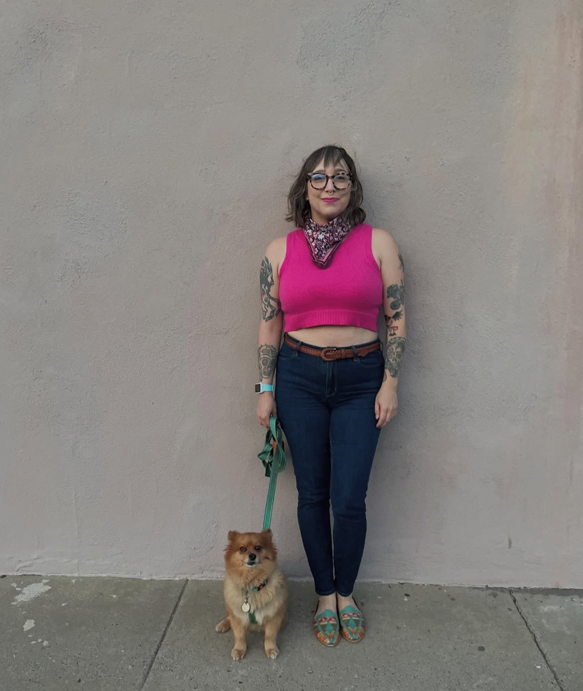

Hello! My name is Jennifer Casillas. I've been in Albuquerque for 2 years, and before that was in Austin for 15 years. I am working on getting my Bachelors in Liberal Arts. I started college back in the mid 2000's, but never finished. So I decided to take advantage of the Opportunity Scholarship and finally finish my degree at 40 years old. I am an Administrative Coordinator at the College of Pharmacy here at UNM, and I really enjoy working here. I am not majoring in anything specific, as I really love what I do in the administrative world. My hope is to take courses that I find interesting to gain more knowledge and add to my skillset. I know having a degree will give me more opportunities for growth here at UNM, as well as a sense of accomplishment knowing I finally completed something I started 20 years ago.
In my free time, I like to go on hikes with my dog, Dina. I also have an 18 year old orange cat named Cosby. I've had him since he was a little kitten. He's old and a little grumpy, but still loves to cuddle and spend time with his Mama. In case you can't tell from my pets and my website, orange is my favorite color. Other things I enjoy include watching horror movies and true crime documentaries, checking out thrift stores, and finding new things to do around Albuquerque. I also really love styling outfits. There aren't many colors or patterns I shy away from. The freedom of expression and creativity I get from styling fun outfits is something I'm really passionate about. You can check out my style blog here.
